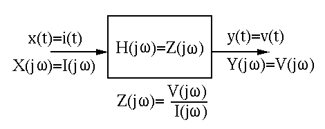
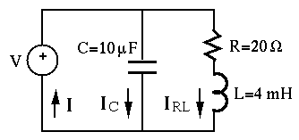
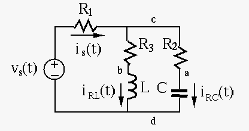
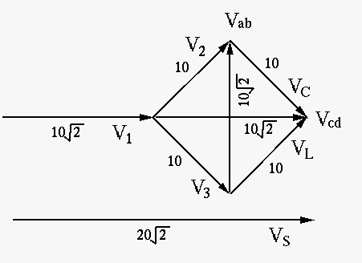

Next: First Order Systems Up: Chapter 3: AC Circuit Previous: Phasor Representation of Sinusoidal
Impedance of Basic Components
The relationship between the sinusoidal current  through and
the sinusoidal voltage
through and
the sinusoidal voltage  across a capacitor or an inductor in
an AC circuit is described by a differential equation in time domain.
However, if we treat such a sinusoidal variable as the projection of
a complex exponential, a vector rotating counter-clock wise, onto the
real axis:
across a capacitor or an inductor in
an AC circuit is described by a differential equation in time domain.
However, if we treat such a sinusoidal variable as the projection of
a complex exponential, a vector rotating counter-clock wise, onto the
real axis:
| (29) |
| Impedance | (30) |

| (31) |
| (32) |
| (33) |
| (34) |
| (35) |
| (36) |
 , or the current
leads the voltage by (“ICE”).
, or the current
leads the voltage by (“ICE”).
| (37) |
| (38) |
| (39) |
(“ELI”).
 associated with capacitor
associated with capacitor  and inductor
and inductor  is “ELI the ICE man”.
Also, consider two extreme cases:
is “ELI the ICE man”.
Also, consider two extreme cases:
In a DC circuit, each resistor is measured by either its resistance  or its conductance . In an AC circuit each component (capacitor,
inductor, or resistor) is measured by its impedance
or its conductance . In an AC circuit each component (capacitor,
inductor, or resistor) is measured by its impedance  , of which the
real and imaginary parts are respectively the resistance and reactance
, of which the
real and imaginary parts are respectively the resistance and reactance
 , or its admittance , of which the real and imaginary parts are
respectively the conductance
, or its admittance , of which the real and imaginary parts are
respectively the conductance  and susceptance
and susceptance  , as summarized below:
, as summarized below:
As a complex variable, the impedance can be written in either
Cartesian or polar form:
| (40) |
The magnitude and phase angle of are:
| (41) |
and
are both purely imaginary, i.e., they are both reactance,
indicating these components are reactive and consume no energy.
The reciprocal of the impedance is called admittance:
| (42) |
| (43) |
| (44) |
 ).
).
The magnitude and phase of complex admittance are
| (45) |
| (46) |
Impedance and admittance are both complex variables. The
real parts and are always positive, but the imaginary
parts and can be either positive or negative. Therefore
and  can only be in the 1st or the 4th quadrants of the complex plane.
can only be in the 1st or the 4th quadrants of the complex plane.
In particular, the admittances of the three types of elements R, L and C are
| (47) |
Ohm's law can also be expressed in terms of admittance as well as impedance. Sometimes it is more convenient in circuit analysis to use admittance instead of impedance.
| (48) |
| (49) |
Here is a review of complex arithmetic.
Example 1:
Solve the circuit below. The voltage from the generator is .

The given voltage can be expressed in phasor form as .
First find the impedances and admittances of the components and the two branches. As , we get

Example 2:
A current flows through a circuit composed of a resistor , a capacitor , and an inductor connected in series. Find the resulting voltage across all three elements.
in phasor:
.
| (50) |
| (51) |
| (52) |
| (53) |
 |
 |
||
 |
|
||
|
(54) |
|
|||
|
|||
|
(55) |
 , we get the total voltage
which is the same as what we got above:
, we get the total voltage
which is the same as what we got above:
| (56) |
Example 3:
In the circuit below,
with some unknown peak value ,
, and
. The RMS value of  across
across  is 10 V. It
is also known that and are in phase.
is 10 V. It
is also known that and are in phase.
.
 and .
and .

Solution

We first note that is behind
by  , and is ahead of
by (“ELI the ICE man”). Also, as and
are in phase, the parallel combination of the RL and RC branches
introduces no phase shift, i.e., its impedance shown below must be
real:
, and is ahead of
by (“ELI the ICE man”). Also, as and
are in phase, the parallel combination of the RL and RC branches
introduces no phase shift, i.e., its impedance shown below must be
real:
| (57) |
| (58) |
apart in phase, we have
, and from the
vector diagram
. We also get the currents
through RC and RL branches are:
| (59) |
, we have
| (60) |
 is
, and
is
, and
| (61) |